ORIGINAL HOMEBREW. WRITTEN IN V. IN THIS REPO.
EACH ONE HAS A TEST THAT PLAYS IT.
| DEMO | WHAT IT IS | SIZE | BUILT WITH |
|---|---|---|---|
| GHOSTGRID | stealth trainer, ten missions | 450 KB | jaggame |
| Jaguar Hero | five-lane rhythm game | 506 KB | jagkit |
| MAW | tunnel flyer with a psytrance habit | 438 KB | jagkit |
| WIREWING | wireframe flying game | 8 KB | jagkit |
| plasma | a first GPU program | 2 KB | jagkit |
| hello | the smallest complete program | 4 KB | jagkit |
| hello2 | hello again, no assembly, plus a coin | 13 KB | jaggame |
All of them handle NTSC and PAL, and all run in vjag and in Virtual Jaguar. None has run on real hardware. If you have a Jaguar and a flash cart, the guestbook wants to hear from you.
just run demos/maw.jag # run an image that is already built just demo maw # rebuild it from its V source first just roboplay ghostgrid # watch its test's robot play it
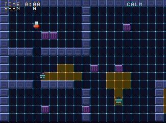 |
An original stealth trainer. The red and white figure is you. The broad teal ones with the red lens are guards, and the amber floor is what they see. Walk, run (guards hear it), crouch behind cover (guards cannot see you there, cameras can) and knock on a wall. Ten missions of four kinds: DEPOT, VAULT and FOUNDRY are sneak missions; ARCHIVE and STACKS ask for every data chip; SPRINT, DASH and GAUNTLET run a countdown; ANNEX and CROSSING have two rooms. Ranks S, A, B, C, saved to the cartridge EEPROM. |
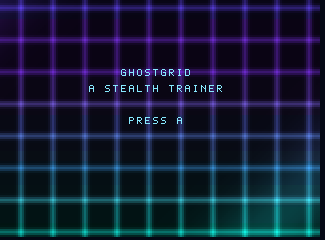 |
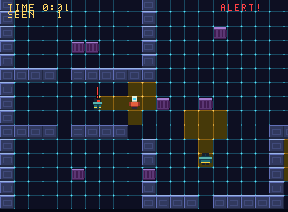 |
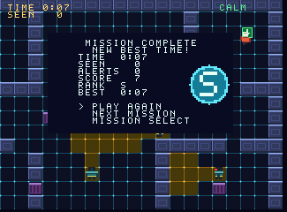 |
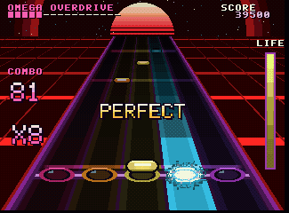 |
A five-lane rhythm game. Five original songs are written as patterns in Each chart is derived from the song's lead guitar, so what you press is what you hear: miss a note and the guitar drops out. Keys 1-5 play the lanes. Its test has a robot read the chart out of memory and play the finale perfectly inside the frame budget. |
| SONG | STYLE | BPM |
|---|---|---|
| MIDNIGHT ENGINE | synthwave anthem | 113 |
| COLOSSUS | heavy half-time | 129 |
| IRON GALLOP | galloping rock | 150 |
| NEON SERAPH | neo-classical shred | 150 |
| OMEGA OVERDRIVE | frantic finale | 180 |
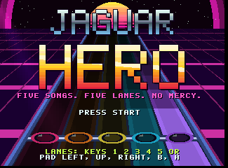 |
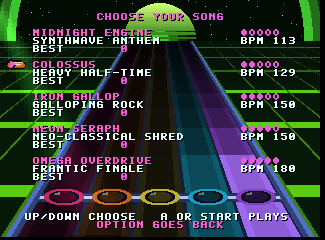 |
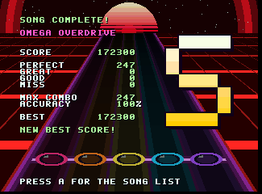 |
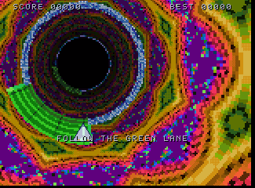 |
A tunnel flyer with a psytrance habit. Left and right turn the tunnel; follow the green lane through each gate, because the rest of the gate is live. The GPU draws the tunnel from a lookup table: a Julia set folded into a kaleidoscope for a wall, a palette that turns while you fly, fog, and a window on the table that wanders so the tunnel swerves. The DSP is a three-voice synthesizer and the 68000 runs the rules and the tune: 150 BPM, kick, rolling bass, acid line. |
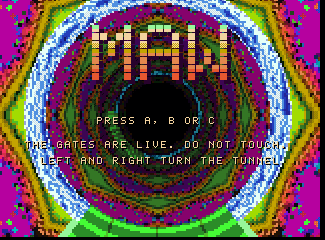
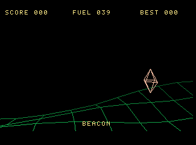 |
Bank with left and right, pull back to climb, fly through the spinning beacons before the tank is dry. The GPU projects the corners of a rolling landscape around the eye, with perspective, bank and distance shading, and joins them with lines it draws itself, sixty pictures a second. Fly into a hill and the onboard computer has a remark ready: 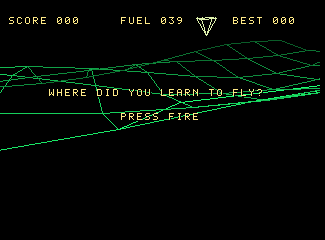 <-- CLICK IT |
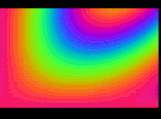 |
The smallest program that uses the GPU. The 68000 keeps three numbers moving; the GPU turns them into a 160×100 picture every frame, shown at double size. 2 KB. The jagkit guide walks through every instruction. Unlike the fake Java applet on the front page, this one is real. |
Anything counted in frames runs a sixth slower at 50 Hz. The tunes are corrected: MAW plays a step every five frames instead of six, and Jaguar Hero advances the song twice on every fifth frame. Movement is not: MAW's tunnel and WIREWING's plane are a sixth slower on a PAL machine. Europe, we apologize.